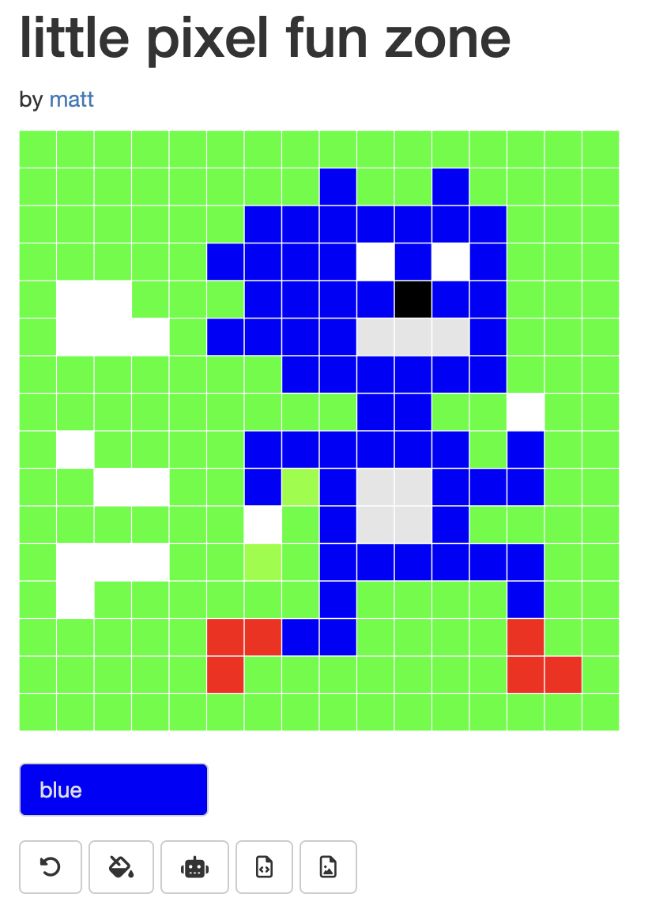

shiny::plotOutput(
outputId = "pixel_grid", # the plot of the pixel grid
click = shiny::clickOpts(
id = "clicked_point", # to retrieve as input$clicked_point in server
clip = TRUE # restrict to plot bounds?
)
)
tl;dr
I made a simple toy pixel-editor for the browser, which helped me learn about reacting to user clicks and implementing undo/redo in {shiny}.
Just browsing
The {pixeltrix} package is a local pixel editor you can run from the R console1. It’s intentionally simple. You start a graphics device and click the squares (‘pixels’), cycling through your provided colour palette. You’re returned a little pixeltrix-class matrix as a memento, which you can re-edit later.
It might be nice to have a browser-based version, but I’ve never really had the time and figured it would be too fiddly. Well guess what, I had some time and it wasn’t that fiddly.
I’ve been learning a bit more {shiny} of late. This mini project was a good way to learn a few things that might come in handy later. In particular, how to:
- Read a clicked point on a plot and react to it.
- Implement a basic undo/redo feature.
This is a reminder to myself of how to do these things.
App
The app is available via Posit Connect Cloud and the source is on GitHub (v0.3.0 at time of writing).
There’s (intentionally) only a few features. You can:
- click a pixel to toggle it on/off
- change the colour, thanks to Dean Attali’s {colourpicker}
- undo/redo (with a very short ‘memory’)
- flood fill
- have an assistant ✨AI draw a picture for you2
- download a matrix representation of your treasured art (pixeltrix-class, for my own needs) as an RDS file
- download a png copy of your treasured art
Wow!
Tricks
I mentioned there were two things I learnt in particular: handling click-reacts and undo/redo.
Click-react
Thanks to the locator() function (witchcraft), {pixeltrix} reads the coordinates of a user’s click on the plotting device. The returned values can be used to identify the nearest ‘pixel’ clicked.
With {shiny} we can generate a plot output and then capture an input from it when clicked3 using the handy click argument to plotOutput().
In the example but of UI code below, we output a plot with ID pixel_grid that was generated in the server. Then, a click on that plot in the app would be registered as the ID clicked_point for retrieval in the server. In my case, I took the x and y elements of that object and matched them to the nearest pixel (using self-plagiarised {pixeltrix} code).
I also made the click trigger observeEvent() to refresh the plot given the user’s selection. So, the user clicks the plot and the nearest pixel is toggled.
Undo/redo
If you misclick a pixel in your picture you could correct it by changing the colour in the colourpicker and re-clicking the errant point. But that takes, ooh, perhaps a couple of seconds. Instead, it seems conceptually more fun to have an undo button. And imagine how exhilarating it would be if that button toggled to redo after it was clicked? I know, calm down.
So, there’s probably lots of ways to do this, but I settled on bookeeping with ‘memory slots’ in a sort-of cyber-goldfish brain, using reactiveValues().
The image is stored as a matrix object, with each cell representing the current state of the corresponding pixel when drawn. The current state of the matrix is stored in the first (of two) memory slots, while the second slot is the previous matrix state. Each time you update the drawing, slot 1 overwrites slot 2 and the new matrix takes its place in slot 1.
So, for example, the app starts up with a ‘blank’ grid:
pixel_matrices <- shiny::reactiveValues(slot1 = .gen_grid(16, "#E5E5E5"))And then observeEvent() handles things when a click occurs. The click coordinates and currently-selected colour are used to toggle or adjust a pixel in the underlying matrix. The resulting, new, version of the matrix is added to slot 1 and the prior version slips into slot 2.
shiny::observeEvent(input$clicked_point, { # trigger on click
matrix_updated <- .gen_updated_pixel_matrix( # update current drawing
shiny::isolate(pixel_matrices[["slot1"]]), # the current drawing
pixel_coords(), # location of clicked point to update
input$selected_colour # current user-selected colour
)
pixel_matrices[["slot2"]] <- pixel_matrices[["slot1"]] # current is now old
pixel_matrices[["slot1"]] <- matrix_updated # new is now current
})Could the so-called cyber-goldfish brain be larger, with more brain slots? No, because then it would be a cyber-elephant and I think that mental image is less funny. But yes, you could probably create slots on the fly and have the ability to undo much further back in history.
So, to perform a do-over, we just need to access the older slot with a button click. The icon for the button is stored in a reactiveVal() that starts as ‘undo’ arrow. When clicked, we flip the memory slots to put the older version in slot 1 and also update the icon to be a ‘redo’ arrow. Another click of the button and the situation will revert again4. Voila: time travel.
button_icon <- shiny::reactiveVal("rotate-left") # starting condition
shiny::observeEvent(input$button_undo, { # trigger on click
# Switch 'memory' slots
slot1 <- pixel_matrices[["slot1"]]
slot2 <- pixel_matrices[["slot2"]]
pixel_matrices[["slot2"]] <- slot1
pixel_matrices[["slot1"]] <- slot2
# Invert undo/redo icon
current_icon <- undo_button_icon()
if (current_icon == "rotate-left") undo_button_icon("rotate-right")
if (current_icon == "rotate-right") undo_button_icon("rotate-left")
shiny::updateActionButton(
inputId = "button_undo",
icon = shiny::icon(button_icon())
)
})Inelegant, perhaps, but manageable5.
Fiddly is money
There’s a number of features I could implement, like arbitrary pixel-grid sizes, uploading a matrix to continue editing it, or maybe even multi-select with click-and-drag (is this even possible?).
If only I could perceive that I have more time and that the fiddlyometer gauge was lower. Yes, this is current me goading future me.
Until then, drop bug reports and how to fix them in the issues.
Also use the app to draw a classic videogame action scene and send it to me, obviously (see inspiration at top of post).
Environment
Session info
Last rendered: 2024-10-18 13:43:32 BSTR version 4.4.0 (2024-04-24)
Platform: aarch64-apple-darwin20
Running under: macOS Ventura 13.2.1
Matrix products: default
BLAS: /Library/Frameworks/R.framework/Versions/4.4-arm64/Resources/lib/libRblas.0.dylib
LAPACK: /Library/Frameworks/R.framework/Versions/4.4-arm64/Resources/lib/libRlapack.dylib; LAPACK version 3.12.0
locale:
[1] en_US.UTF-8/en_US.UTF-8/en_US.UTF-8/C/en_US.UTF-8/en_US.UTF-8
time zone: Europe/London
tzcode source: internal
attached base packages:
[1] stats graphics grDevices utils datasets methods base
loaded via a namespace (and not attached):
[1] htmlwidgets_1.6.4 compiler_4.4.0 fastmap_1.2.0 cli_3.6.3.9000
[5] tools_4.4.0 htmltools_0.5.8.1 rstudioapi_0.16.0 yaml_2.3.10
[9] rmarkdown_2.28 knitr_1.48 jsonlite_1.8.9 xfun_0.48
[13] digest_0.6.37 rlang_1.1.4 evaluate_1.0.1 Footnotes
You can read about {pixeltrix} in other posts.↩︎
This most often looks like random noise, but I’m sure that’s because of the training set or something. Maybe squint? I’ve been told that robot self-portraits sometimes appear, but I’m sure that’s just a hallucination.↩︎
Note also that you can perform actions on
dblclick,hoverandbrush, not just a single click.↩︎If you undo and then make a new click, then the undo/redo button will continue to show the ‘redo’ icon. Subtle, but to avoid this, you must reset the
reactiveVal()to show the ‘undo’ icon if you perform any other actions after undoing.↩︎If we messed with time travel and things didn’t go a bit Primer, then I’d say we’ve done well.↩︎
Reuse
CC BY-NC-SA 4.0